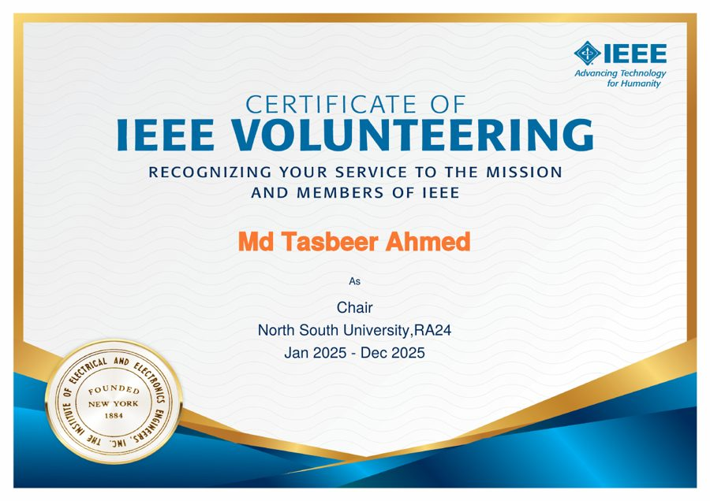
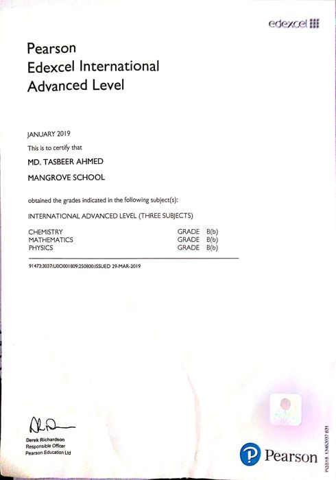
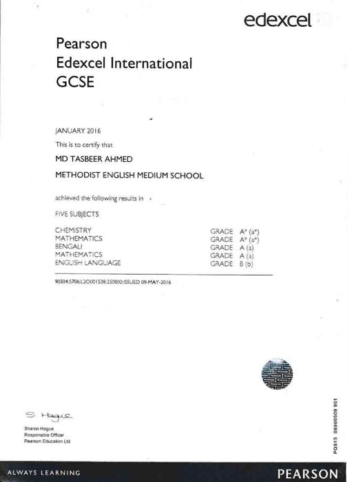
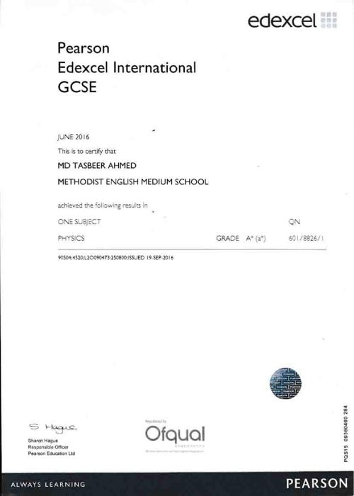
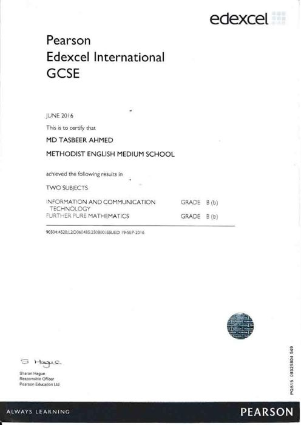

NSU-AI-SAT ADCS simulation
MATLAB, Simulink
A six-mode model-in-the-loop with TRIAD and MEKF estimation, B-dot, quaternion PID and wheel desaturation. It detumbles within one orbit, with under 0.7° pointing error in sunlight.
MSc student and lab instructor in Electrical and Electronic Engineering at North South University, Dhaka, and Junior Research Fellow in the ADCS team at SPARRSO. I work on attitude determination and control for the NSU-AI-SAT CubeSat, on its radio link budget and antennas, and on swarm robotics at the NIRO Lab.
My main work is satellite attitude control. I keep a second line in robots that work in groups and with people.
I finished my BSc in Electrical and Electronic Engineering at North South University in 2024 (CGPA 3.67, Magna Cum Laude) and started my MSc in September 2025. I am a Junior Research Fellow in the ADCS team at the Bangladesh Space Research and Remote Sensing Organization (SPARRSO). On NSU-AI-SAT I am a project lead of the ADCS team and a member of the communications team. My tools are MATLAB and Simulink for modelling, Kalman filters for sensor fusion, and CST Studio for antennas. I am working toward a PhD in swarm robotics and human-robot interaction.
Newest first.
Bangladesh Space Research and Remote Sensing Organization (SPARRSO)
NSU-AI-SAT CubeSat (APSCO), North South University
NSU Intelligent Robotics (NIRO) Lab
Department of Electrical and Computer Engineering, North South University
IEEE NSU Robotics and Automation Society Student Branch Chapter
A selection from satellite work, robotics and my degree.
MATLAB, Simulink
A six-mode model-in-the-loop with TRIAD and MEKF estimation, B-dot, quaternion PID and wheel desaturation. It detumbles within one orbit, with under 0.7° pointing error in sunlight.
MATLAB, CST Studio
UHF/VHF and S-band link budgets, plus antenna selection and design, for the Detailed Design Report.
STK
Modelled the CubeSat's motion relative to China's Tianhe station module from TLEs, for the target-tracking mode.
NIRO Lab, BEAR Summit 2026, CES 2027
Three drones that spray together, tested against one large spraying drone on time and energy for precision agriculture. Selected for exhibition at CES 2027 in Las Vegas.
Human-robot interaction
Four waste-bin robots that greet people and thank them for using the bin. A field study at NSU gates compared baseline, non-technical and robot interventions.
Raspberry Pi Pico, OLED
Ten facial expressions with blink-based transitions for expressive robots.
BSc capstone, 2023-24
A robot to deliver snacks, drinks and medicine to classrooms, with a 3D model in Onshape, Raspberry Pi image processing and GPS localization.
Education, experience, projects, skills and awards.

Chair, IEEE NSU RAS Student Branch ChapterJan 2025 to Dec 2025 Secretary, IEEE NSU RAS Student Branch ChapterJan 2024 to Jan 2025
Pearson Edexcel International A LevelJanuary 2019 · Chemistry, Mathematics, Physics
Pearson Edexcel International GCSEJanuary 2016 · Five subjects
Pearson Edexcel International GCSEJune 2016 · Physics
Pearson Edexcel International GCSEJune 2016 · ICT, Further Pure Mathematics